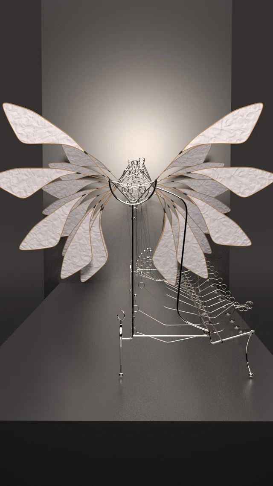

01Work Archive · 2025—2026
All work.
Procedural systems, visual effects, artist tools, environments, and moving-image work.
12 Projects
Work Archive · 2025—2026
Procedural systems, visual effects, artist tools, environments, and moving-image work.
12 Projects